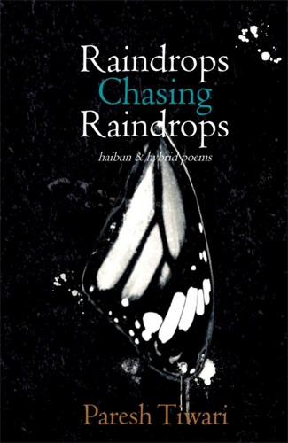

Dave Read
Calgary, Alberta, Canada
Review of Paresh Tiwari's Raindrops Chasing Raindrops: Haibun & Hybrid Poems
Paresh Tiwari, Raindrops Chasing Raindrops: Haibun & Hybrid Poems, Parparganj, New Delhi, 2017, 92pp, USD $10. ISBN: 978-81-929355-7-7.
(available on Amazon.com)
Raindrops Chasing Raindrops, Paresh Tiwari’s second collection of haibun, showcases Tiwari’s mastery of the form through his considerable range of narrative and poetic skills. Tiwari’s haibun are characterized by prose that is vivid and bright set against concise and hard-hitting haiku. The collection is divided into four sections which outline themes of loneliness, healing, memory, and change.
In “Paper planes,” the first section of the book, Tiwari takes his readers through journeys of loneliness. The surrealistic “Portrait of a heart” describes a surgeon extracting “gangrenous memories," “the peeling plaster of relationships” and “the acrid scent of regrets." Undergoing emotional surgery, the narrator yearns to have his sadness and heartaches removed. Yet, as the concluding haiku demonstrates, a self-inflicted wound remains:
winged ants …
when did I first wish
a life without you
Likewise, “Tipping point” speaks from the perspective of a man whose lover is leaving him for someone else. As difficult as getting dumped can be, the narrator compounds his problem by asking “For whom?” Ruthlessly, his now ex-lover speaks of her new man, a painter, whose “work is making waves” and who “unlike you … isn’t stuck with a niche, dead-end, obscure form of poetry.” The loneliness that comes with the relationship’s sudden end increases for the narrator through the belittling comparison.
There are haibun, however, in which Tiwari’s characters attempt to overcome or escape their loneliness. In “Lifelike,” the narrator describes his affair with a mail-order doll. After assembling her, he makes clear that “It’s not just about sex,” and describes their conversation “of poetry in existentialism and the mundane in art.” Yet in the end, he is left to peel his “skin from your latex body.” In a different way, the character of “Fossils” escapes his world by planting himself in his garden. Over time he becomes a tree. While he watches most of his life slip by without him, he enjoys late moments with his granddaughter who “climbs over my branches” and whom he tickles “with my leaves.” Even so, it is clearly not a full relationship. Ironically, in both instances, the intent to overcome loneliness pulls the character further away from the world. The haiku from “Fossils” highlights the point:
dandelions …
holding my breath
for an eternity
Following “Paper planes,” the section entitled “Kintsugi” introduces haibun of healing. Kintsugi is the Japanese process of repairing broken pottery using a lacquer mixed with powdered gold. As such, it is consistent with the themes in Tiwari’s poems. For even as someone heals, their scars remain. This concept is well articulated in the haiku at the end of “Reef knot”:
good as new
the less than full moon
and this heartache
Similarly, a healing or letting go of sorts occurs in “Skeletons.” The narrator absently scribbles “your name in the margins of the book.” Seeing the name, he feels helpless against his own longing. He can do nothing more than “allow the vermillion of the dusk soak over it.” While darkness is often associated with loneliness or despair, in this instance, it cures. It allows him to see others' truths in a new way:
trail dust …
our shadows closer
than we ever were
Tiwari’s haibun also recognize that the process of healing does not always come to completion. The scars that come from heartache can be paralyzing, leaving one silent and unwilling to take risks again. “Songbirds,” in particular, illustrates the point. Considering his former love, the narrator confesses that he continues to write poems, “Sometimes, even about her.” Rather than reaching out, sharing, and taking a chance on her again, he chooses to “bury those poems deep in the loose soil in my backyard.” Time does not heal all wounds. Pain sometimes lingers, leaving its bearer timid and unwilling to do more than accept fate:
night express
a raindrop’s journey
on the glass pane
The third section of Raindrops Chasing Raindrops, “Postcards from the past,” provides an extended look at memory. In “Trace of a memory,” we are presented with a picture of a distant mother through the eyes of a boy. She does not sing him “lullabies to ease the cold, or the wait for sleep,” nor will she tell the him a bedtime story. Instead, when he asks for a fairy tale, she brushes him off, coldly stating “You are eight now.” The concluding haiku details his homecoming with a corresponding lack of warmth:
returning home —
the moon, the walls
yellow with time
Along a different vein, “Deep down,” a hybrid haibun that is composed of two prose pieces woven through each other, features a man admitting to his wife that he has found someone else. The husband is blunt, even cruel. What is more, the juxtaposition between the prose pieces accentuates his cruelty. His words “We are everything you and I could never be” of the first prose string are followed by “Let yourself sink deep” of the second. The haiku accounts for his readiness to move on:
spring cleaning —
dusting the cobwebs
from my shadow
Tiwari also recognizes that there are scenarios in which memories can be created. “The cemetery of times past” is about an adult son visiting his aging and weakened father. They reconstruct shared memories in a “world that we build together by his hospital bed.” The new memories include painting, riding unicycles, and learning magic. What is more important, however, is what is excluded. The son, in these memories, no longer has “angry welts across my back and arms when I lie to him for the first time.” It is not uncommon for individuals to remember, adjust, or simply compose the events which put them in a better light. While the past is the past no matter what we remember, there are cases, such as trying to give an old man comfort, where we reinvent it in its telling.
The final section, “Patchwork quilt,” deals with the process of change. Thematically, it refers to the Heraclitus quote “No man ever steps in the same river twice …” with which Tiwari opens the book. “Burning bright,” for example, is a haibun about the metamorphosis of a man into a lion. Step by step, it outlines the changes a man must endure, such as growing nails, walking on all fours, learning to kill, etc., to complete this transition. The process, however, only ends when “your eyes begin to burn a hole in the moonless night.” It is then “that you are accepted as a member of the pride.” Presenting arguably the greatest surprise in all of Raindrops Chasing Raindrops, the haiku turns this simple tale of change into a metaphor of human ambition:
corporate ladder
starting at the bottom
of the food chain
There are, however, haibun in “Patchwork quilt” in which objects or moments exist without change. The old banyan tree in “Tethered” seems “rooted in a wrinkle in time, unaffected by its steady onward march.” Furthermore, it is shown to restrict change in other objects. An oddly shaped idol came to rest under the tree’s shade, never to leave again. More importantly, a kite has been caught in its branches. The sight fills the narrator with longing. He can only hope “someday it would break free and float away into the bright blue sky.” Rather than comfort, he feels restricted by this break in the flow of events. The hollowness of the moment is captured in the haiku:
forest trail —
the echo of a journey
I never started
Paresh Tiwari’s Raindrops Chasing Raindrops is an excellent collection of haibun and hybrid forms. Through vivid prose and strong haiku, Tiwari engages his reader in entertaining and artistic tales. Shifting from the imaginative and surreal to the hard-hitting and true, Raindrops explores themes of loneliness, healing, memory, and change. Tiwari has written a first-rate book: one to be highly recommended.
|